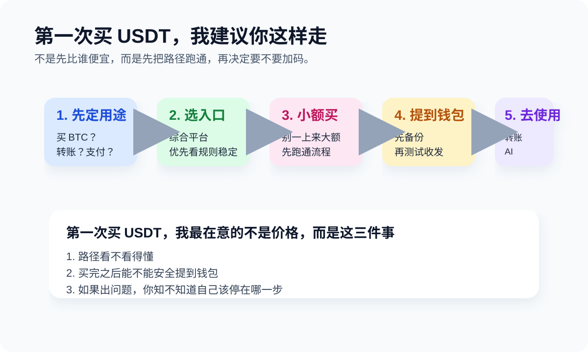

USDT 新手手册



常用钱包与资料入口
我做这个手册，只想解决两类问题：
- USDT 怎么买、怎么存、怎么转、怎么避坑。
- USDT 除了放着，还能拿来做什么，比如 AI、旅游、eSIM、VPN 和跨境支付。
这不是交易平台，也不是投资建议。
我更关心的是：如果你第一次实际使用 USDT，应该先理解什么，先准备什么，哪里最容易翻车。很多站喜欢把你往开户链接和工具页推，我更想先把路讲明白。因为在这个领域里，真正贵的不是手续费，而是你第一次就走错。
我更关心的是：如果你第一次实际使用 USDT，应该先理解什么，先准备什么，哪里最容易翻车。很多站喜欢把你往开户链接和工具页推，我更想先把路讲明白。因为在这个领域里，真正贵的不是手续费，而是你第一次就走错。
1. 从哪里开始
如果你是第一次接触 USDT，我建议按这个顺序读：
- Start Here：先理解这套手册在讲什么
- USDT 是什么？先把稳定币和用途讲明白
- 如何购买 Tether USDt（USDT）
- 人在中国怎么买 USDT / BTC
- 怎么选钱包
- 怎么发送 USDT
- TRC20、ERC20、BEP20 有什么区别
- TRON 能量指南
- 如何用 USDT 订阅 AI
2. 我为什么这样写
我不想把这站写成“币圈导航”或者“工具清单”。那种东西看着很全，实际最容易让新手产生错觉：以为自己已经懂了。我的默认写法是：
- 先讲角色关系，再讲操作
- 先讲默认路径，再讲工具
- 先讲哪里最危险，再讲哪里最方便
因为我自己看过太多新手，不是输在不会点按钮，而是输在顺序错了。
3. 章节
新手入门
中国用户现实问题
TRON / TRC20
实际使用场景
4. 新手常用工具
这里不是榜单，只是当前我觉得对大多数新手更省事的路径。
Beginner-friendly option
如果你想找一个更容易上手的自托管钱包来处理 TRON 和 USDT，imToken 是我目前愿意放进手册里的一个选项。原因不是“最强”，只是对第一次真正管理链上资产的人更友好一些。
如果你想找一个更容易上手的自托管钱包来处理 TRON 和 USDT，imToken 是我目前愿意放进手册里的一个选项。原因不是“最强”，只是对第一次真正管理链上资产的人更友好一些。
直接可用的官方参考
| 你现在的目标 | 我会建议先看什么 | 原因 |
|---|---|---|
| 想先买到第一笔 USDT | 如何购买 Tether USDt（USDT） | 先把买法和风险路径跑通 |
| 买完以后不知道放哪 | 怎么选钱包 | 平台账户和自托管不是一回事 |
| 准备第一次转账 | 怎么发送 USDT | 绝大多数事故都发生在这一步 |
| 总被 TRC20 / ERC20 搞混 | TRC20、ERC20、BEP20 有什么区别 | 错链是最常见的低级事故 |
5. 最近更新
- 新增路线图与流程图：让首页和核心文章不只是文字堆叠。
- 重写核心链路：Start Here、USDT 是什么、如何购买 Tether USDt（USDT）、怎么发送 USDT、网络解释。
- 已整理：中国用户现实说明、TRON 能量指南、AI 支付。